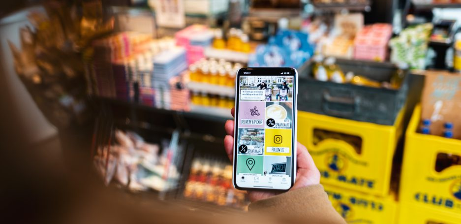

Lekker bezig
Stach weet wat lekker is
Bij STACH denken wij elke dag na over hoe wij ervoor kunnen zorgen dat jij de dag goed doorkomt. Dat doen we door elke dag heerlijke barista koffie te zetten, verse croissantjes, kokosmakronen en brood af te bakken maar ook hebben we gezonde coldpressed juices of een healthy gingershot om je dag nóg beter te beginnen. In de middag kan je kiezen uit een van onze befaamde broodjes, bijvoorbeeld onze Truffle Meatball sandwich en onze Vegan Chicken Avocado sandwich met pulled jackfruit, spicy srirachamayo, lekker veel avocado en wat rucola. Liever iets zonder gluten? Ga dan voor een heerlijke verse salade of een handgerolde sushirito met zalm en avocado. En wanneer je ’s avonds geen tijd hebt om te koken, dan loop je gewoon binnen voor kruidige curry, lekkere lasagne of een verse pokebowl met zalm. En voor de gezellige momenten in het leven hebben we heerlijke zoete lekkernijen en goede wijnen. Wij zorgen voor jou, zodat jij kunt doen wat voor jou belangrijk is. Lekker bezig dus.
Nu: De Stach app in heel Amsterdam
Download'm nu & krijg de eerste koffie van ons! Locaties
Vind Stach in de buurt
Kom langs in een van onze winkels
Zoek een winkel